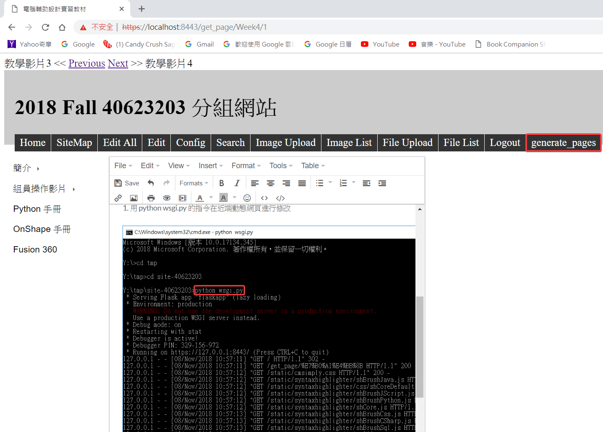

Week4
Onshape：1-1-Lesson Plan.pdf
- 建立 Onshape 帳號
- 簡單介紹其介面操作
- 使用 Onshpae 繪製及練習簡單圖形
- 講解草圖建模步驟
- 做擠出等等它項指令
- 完成簡單草圖
期中倉儲、網站、網誌、投影片管理方法：
網站：
1. 用 python wsgi.py 的指令在近端動態網頁進行修改

2. 按 generate_pages 轉成近端靜態網頁

3. 先用 git status 查看修改的東西
4. 再用 git add, git commit -m, git push 推上去
網誌 ( Blog )：
1. 用 Leo 對網誌進行修改
2. 開啟 pelican.leo

3. 修改遠端連結及標頭
4. 修改討論區，改成 mdecadp2018
投影片：
1. 用 Leo 對投影片進行修改
2. 開啟 reveal.leo

教學影片3 << Previous Next >> 教學影片4